Operation
- Path
- Descriptions > 55 ELECTRICAL EQUIPMENT > 5560 ON-BOARD INSTRUMENTS > 5560B ANALOGUE INSTRUMENT PANEL > Operation
- Kind
- system description
- Applies to
- all engines; all production periods
- Interactive page
- https://sloeber94.github.io/elrnDB-lThss/en/#/210446
Applies to: all engines; all production periods
The task of the instrument panel node is to:
- Receive and transmit information on the B-CAN
- Manage the accessory functions.
- Display the vehicle operating states
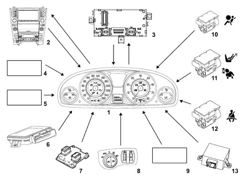
- 1- Instrument panel
- 2 - Connect
- 3 - Body Computer
- 4 - Trip meter zeroing button and screen escape button
- 5 - SCS control unit (for activating failure message)
- 6 - EPB system control unit (for activating failure message)
- 7 - Engine management control unit (for activating EOBD warning light)
- 8 - Instrument light dimmer
- 9 - Headlamp alignment control unit (for activating warning light failure)
- 10 - Air Bag control unit (for activating warning light failure)
- 11 - Air Bag control unit (for activating passenger air bag disabled warning light)
- 12 - Air Bag control unit (for activating seat belts not fastened warning light)
- 13 - CSG control unit (power assisted steering) (for activating warning light failure)
The functions involving the Instrument Panel Node are listed below:
ACTIVE MATRIX DISPLAY
The explanation of the display modes, symbols, icons and priorities for the messages in the active matrix is given below.
The function code [FXXX] is given in the relevant paragraph for the display of main functions or events.
Fault display logics
When a malfunction occurs the ideograms (1) for the fault/function diagnosed is displayed and at the same time there is a description (2) of the fault and any messages relating to actions that the driver should take, there is also an intermittent acoustic signal lasting about 2 seconds.
The area dedicated to the display of the symbols is always brightly lit and is not affected by the lighting dimmer.
When a fault occurs, all the other information is not displayed (clock/date/outside temperature/radio info).
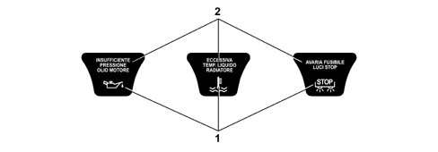
The display of the faults follows a logic that depends on the priority (0, 1 or 2) assigned to it; in any ase, there is an acoustic signal as well as the display.
Very serious fault (priority 0)
The corresponding screens are displayed, alternately, according to the following logic, for this type of fault:
- display for 3 secs of the fault message and the corresponding symbol;
- display for 2 secs of the fault message and the warning message.
This cycle is repeated indefinitely, interrupting any previous display shown.
The display is proposed again at each key-on until the cause of the malfunction is solved.
The display cycle can be interrupted in two ways:
- removing the cause of the malfunction that produced the problem;
- the driver pressing the "ESCAPE" button.
In the second case the symbol stays in the centre of the display and remains there (until the problem that caused the fault is solved) proposing the screen prior to the event which was in the area in the centre now occupied by the symbol.
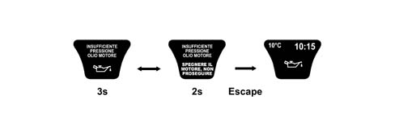
During the display of priority 0 faults (during or after the warning cycle) the ACC and/or Navigation functions are not visible in the display, with the exception of "Braking power limit" information for the ACC which should be displayed and which, to all intents and purposes, has a greater priority than "0" when the ACC system is activated
Serious fault (priority 1)
The corresponding screens are displayed, alternately, according to the following logic, for this type of fault:
- display for 3 secs of the fault message and the corresponding symbol;
- display for 2 secs of the fault message and the warning message.
This cycle is repeated 4 times for a total of 20 seconds and then disappears; the cycle is proposed again at each key-on as long as the cause of the malfunction that produced the fault persists.
If the fault disappears during the 20 second display, the display (message + symbol) remains for a minimum of 2 seconds and then goes out.
If the "ESCAPE" button is pressed before the 20 seconds have elapsed, the warning cycle is immeidately interrupted.
At the end of the display cycle (20 sec. period or pressing the "ESCAPE" button) the symbol (1) stays in the centre of the display where it remains until the cause of the malfunction which produced the fault is solved; the previous screen (2) is proposed again, at the same time, unless the centre area is occupied by the symbol
If the Navigation and/or ACC functions were activated before the fault occurred, when the 20 second display cycle is over, the information display is lost; the symbol for the fault is displayed in its place in the centre of the display and remains present until the cause of the malfunction is solved.
For information on the logic followed in the case of intervention due to faults whilst the Navigation and/or ACC functions are activated see: "Display priorities".
Not serious fault (priority 2)
The display logic is the same as for priority 1 faults, with the difference that at the end of the 20 sec. display cycle or when the "ESCAPE" button is pressed, the symbol (1) is positioned, in a reduced size, in the area of the display dedicated to showing the symbols where it remains until the cause of the problem that produced the fault is solved.
Irregularities with graphic representations
The following failure/check signals are shown by means of more explicit graphic representations (e.g. 2D/3D):
- doors not properly shut
- brake lights / brake lights fuse failure
- lights failure (side/rear fog/no. plate)
- insufficient fluid level (engine coolant/windscreen washer fluid)
- insufficient tyre inflation pressure
At the end of the warning cycle, if the fault that occurred is a 2 priority, a reduced size symbol will be shown on the display in the special area dedicated to the display of symbols.
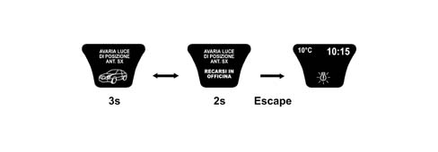
Faults with check for "engine running" state
The instrument panel recognizes the "engine running" state for signals on the reconfigurable matrix display for the following failure messages "Alternator failure", "Insufficient engine oil pressure", "EOBD" and "Danger of ice" as follows:
- NORMAL OPERATING CONDITION: the instrument panel is only enabled to signal the fault message if the engine rpm remains above 192 rpm.
- ENGINE STARTING STAGE: the instrument panel is only enabled to signal the fault mesasge if the engine rpm exceeds 576 rpm or 704 rpm for at least 1.02 secs. from the moment this level is exceeded.
RPM level* | #r | |
|---|---|---|
#c | Petrol Versions | Diesel Versions |
"Insufficient engine oil pressure" reading on panel | 704 | 704 |
EOBD reading on panel | 704 | 704 |
"Ice danger" warning on panel | 704 | 704 |
"Alternator failure" warning on panel | 576 | 576 |
Faults with dedicated warning lights in panel
If the fault information is displayed by the dedicated warning lights in the instrument panel coming on, then the message + the symbol is also shown in the reconfigurable matrix display in accordance with the logics described previously
If the faults are priority 1 / 2, at the end of the display cycle (when 20 seconds have elapsed or when the "ESCAPE" button is pressed) the dedicated warning light remains on, whilst the fault symbol disappears both from the centre area and in the reduced size.
On the other hand, for 0 priority faults (which do not have a timed warning cycle) if the "ESCAPE" button is pressed the warning light remains on and the fault symbol is shown in the centre of the display.
If the fault disappears during the display cycle, then both the warning light and the message + symbol remain for a minimum of 2 seconds and go out later on at the same time.
The following faults have dedicated warning lights in the panel:
- Air Bag failure
- passenger Air Bag disablement (only via warning light in panel)
- ABS failure
- VDC failure
- EBD failure (braking system)
- Insufficient brake fluid level
- EPB failure (electric parking brake)
- EOBD failure (engine management system)
- engine coolant overheating
- fuel reserve
Fault priorities
The table below summarizes the display logics applied by the instrument panel.
Fault priority | Duration of default display cycle | Behaviour when "ESCAPE" button is pressed | Position of symbol (after the display cycle) (1) | Position of symbol (after display cycle) with CC/Navigator working (1) (2) | Display in the case of other problems already in progress |
|---|---|---|---|---|---|
0 (very serious) | Unlimited | Interruption of cycle and display of previous screen with summary symbol (*) | Centre area | Centre area (ACC/Navi not visible) | Immediate |
1 (serious) | 20 s | Centre area | Centre area (ACC: primary info, NAVI not visible) | At least 2 secs. elapsed since the display of the fault in progress | |
2 (not serious) | 20 s | Area dedicated to warning lights, reduced in size | Area dedicated to warning lights, reduced in size (ACC/Navi visible) | At least 2 secs. elapsed since the display of the fault in progress | |
(1) for faults with a dedicated warning light in the instrument panel there are no plans for the summary symbol to remain until the end of the display cycle. Whilst for faults shown in the display only, the symbol may be large (for priorities 0 and 1) or small (priority 2).
(2) in this case the information which was occupying the centre area of the display disappears to leave space for the fault summary symbol.
The following faults are considered very serious and the information is very important (PRIORITY 0):
- insufficient engine oil pressure
- insufficient engine oil level
- radiator coolant overheating
- insufficient radiator coolant level
- EBD failure (braking system)
- Insufficient brake fluid level
- Air Bag system failure
- warning! Air Bag test not over (**)
- automatic transmission fluid overheating
- inertia switch on
- tyre punctured
The following faults are considered serious (PRIORITY 1):
- Adaptive Cruise Control failure (ACC)
- ACC failure - lens dirty
- alternator failure
- power assisted steering failure
- automatic transmission failure
- ABS failure
- engine management system failure (EOBD)
- VDC system failure
- EPB failure (electric parking brake)
- vehicle protection system failure
- heater plugs failure
- failure and system not programmed (used for VPS function)
- key no longer present in the vehicle
The following faults are not considered serious (PRIORITY 2):
- insufficient tyre inflation pressure
- tyre punctured
- tyre inflation pressure monitoring failure
- lights failure
- insufficient windscreen washer fluid level
- refilling with fuel required
- brake pad wear
- headlamp alignment correction system failure
- suspension failure
- humidity in the diesel filter
- diesel filter sensor failure
- window safety system failure
- engine oil pressure sensor failure
- engine oil level sensor failure
- radiator coolant temperature sensor failure
- parking sensor failure
- rain sensor failure
- dusk sensor failure
- speed limit exceeded
- ABS or VDC or EPB warning light failure
- brake fluid warning light failure
- failure, go to workshop (general fault)
- system not programmed (message used for T.P.M.S.)
- system not programmed (used for VPS function)
- alarm failure
Faults with specific display logics:
- Danger of ice: event with lower priority than all the others.
- Doors open: event linked to the state of the doors (same logic as for the state of the bonnet and boot).
- Rear door child-locks switched off: event linked to the operation of switching off the child-locks by the driver
- ASR on/off
- Remote control battery run down
- Electronic key battery run down
- Electronic key not recognized
- Break in attempt
- The steering locks when the doors are closed
- Adaptive Cruise control OFF
- Adaptive cruise control not activated
If events occur simultaneously, the display of faults with priority 0 takes precedence over priority 1 faults and priority 2 faults are displayed last.
If another priority 1 or 2 fault occurs during the display of a fault message, then the second fault is only displayed after the previous one has been shown for 2 seconds.
The successive display logic remains the rolling type described previously.
If, on the other hand, another priority 0 fault occurs whilst a fault message is being displayed, this second message is displayed immediately without waiting the 2 seconds.
The successive display logic remains the rolling type described previously.
During the rolling display of several cycles, if some of them are interrupted before their expiry time (usually 5 secs) by new failure/check events, then the last cycle should be displayed for 5 secs, even if less time is required to conclude the complete display cycle.
Display priority for functions and faults
First level priority: faults/speed limits/doors open
If the NAVIGATION function is activated, the display logic depends on the fault priority:
- a - Priority 0/1, the NAVIGATION information disappears definitively and is replaced by the display cycle for the fault or by the fault symbol only if the ESCAPE button is pressed or by the end of the cycle (in the case of prority 1 faults).
- b - Priority 2, the "navigation" information is interrupted and the fault display cycle takes its place (tot. 20 secs. or if the ESCAPE button is pressed). At the end of the display cycle the NAVIGATION information is restored and a reduced size fault symbol reappears in the area of the display dedicated to showing symbols.
If the ACC function is activated, the display logic depends on the fault priority:
- a - Priority 0, the ACC information disappears definitively and is replaced by the fault display cycle or by the fault symbol only if the ESCAPE button is pressed. If the ACC system communicates "braking power limit" information, the display of the ACC function, complete with the "Brake in safety" message is automatically suggested again (the duration of the display is established by the NAC - Adapative Cruise Control Node). At the end of this display, the warning cycle (or the symbol only) for the fault in progress is shown.
- b - Priority 2, the ACC information is interrupted and the fault display cycle takes its place (tot. At the end of the display cycle (tot. 20 secs. of if the ESCAPE button is pressed) the ACC information is restored.
If there is a priority 1 fault, the main ACC information is displayed in the top area of the zone and the fault symbol remains in the centre area.
If there is a priority 2 fault, the fault symbol is summarized, in a reduced size, in the area of the display dedicated to showing symbols, whilst the display of the ACC function returns to being the default one.
If, during the 20 seconds that the fault message is displayed, the ACC system needs to communicate the following information:
- "braking power limit"
- "functional limits reached"
the display of the ACC function is automatically suggested again with the corresponding messages:
- "Brake in safety" (duration of the display established by the NAC)
- "ACC OFF" or "ACC not activated" (duration of the display 5 seconds)
At the end of the display of the "ACC OFF" or "ACC not activated" messages the fault warning cycle previously in progress continues until it is terminated.
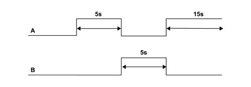
If faults occur in the sub-systems (Braking/Engine management/VDC/Automatic transmission), the ACC system is deactivated and the following are displayed, in order:
- the screen for the fault in progress and the screen notifying the customer of the ACC deactivation stage, in rolling mode;
- the standard screen (or the one activated prior to the activation of the ACC).
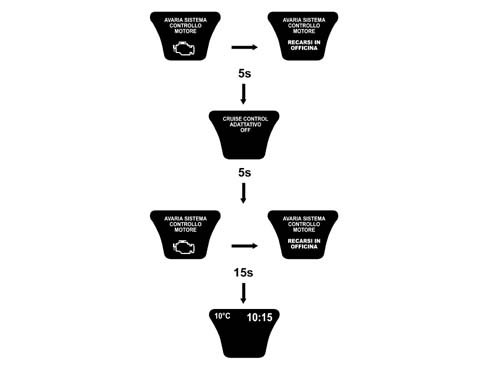
The warning message that the SPEED LIMIT has been exceeded is always displayed with a buzzer.
The DOOR OPEN information is signalled synchronized with the vent, in other words the display is activated immediately as soon as one or more doors is opened and remains open until all the doors of the vehicle are properly shut.
If faults (of any priority) are in the process of being displayed, the DOORS OPEN information is displayed in rolling mode with the other screens.
Second level priority: ACC/navigation
When the ACC function is activated, the display of all messages corresponding to the functions activated by the centre console (e.g. radio, climate control, telephone, etc.) is inhibited .
However, the display of messages corresponding to the following functions (which can be activated using the special buttons on the steering wheel) remains activated:
- navigation system
- telephone
- radio
Information coming from the outside is also displayed in relation to the telephone functions (e.g.: incoming SMS messages, incoming calls, etc.) .
One of these pieces of information should be displayed on the same screen as the ACC primary information.
If, during the display of these messages, the ACC system notifies of changes such as "the presence of an obstacle along the route" or "locking onto a vehicle and following it", they are signalled in a reduced format in the area dedicated to the ACC primary information.
The corresponding symbols are as follows:
- "presence of an obstacle": shape of a car (1);
- "tracking": same shape with red outline; the tracking mode is not specified (2).
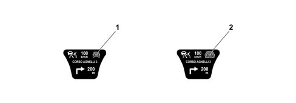
If one of the following events occurs during the simultaneous display of the ACC and one of the other functions:
- Braking power limit ("Brake in safety" screen)
- Functional limits reaches ("ACC OFF" screen)
only the ACC information is displayed on the above mentioned screens.
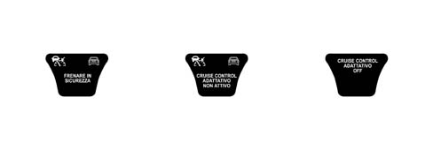
If the ACC and NAVI functions are activated on a vehicle with manual transmission, if it is necessary to communicate both "gear change suggestion" and "presence of an obstacle" information at the same time, then these two pieces of information alternate every 0.5 seconds in a rolling format.
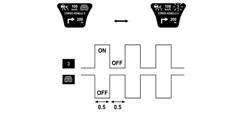
STANDARD DISPLAY
The functions in the standard display are:
- outside temperature reading (1)
- time (2)
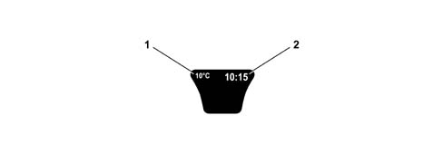
DISPLAY AT KEY-ON
Petrol Versions
The check stage starts at the key-on and the message "DIAGNOSIS IN PROGRESS" and the icon of the vehicle are displayed with a (microsoft effect) enlargement lens to give an idea of the function in progress (dynamic display for 4 seconds) (1).
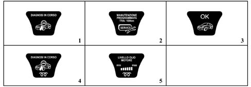
At the end of the check stage, if:
- it concludes with a positive outcome,
- the engine speed is above 704 rpm for at least 1.53 secs. from the moment this level is reached
- the SERVICE messages, if present, are displayed and should persist for a time of t = 5 seconds (2).
the "OK" message + car symbol should appear and remain for 3 secs. (3).
If, after 4 seconds have elapsed and the check stage has concluded with a positive outcome, but the engine has not been started up, the standard screen will appear.
Diesel Versions
The check stage starts at the key-on and the message "DIAGNOSIS IN PROGRESS" + the heater plugs symbol + the icon of the vehicle are displayed with a moving lens to give an idea of the function in progress (dynamic display for 2 seconds) (4).
The heater plugs symbol persists until the end of the pre-heating stage, the "oil level" information is displayed after two seconds and remains for 5 secs. (5).
At the end of the 5 seconds, in the same way as for petrol versions, either the OK screen or the standard screen is displayed depending on whether or not the engine has been started up.
Diesel and Petrol Versions
If the check stage highlights faults, then they are displayed as described in the "Display of faults" chapter.
If cases of "insufficient engine oil pressure" and/or "inertia switch on" are verified during the diagnostic cycle then they are displayed immediately, whilst in the case of all other faults (priority 0, 1 and/or 2), the "DIAGNOSIS IN PROGRESS" screen is displayed first and then the display cycle for the fault detected.
In these cases the display logic for the diagnostic stage is lost and once the fault display cycle is over the standard screen is shown.
On vehicles equipped with "Vehicle Protection Systems", if there are messages on the state of the system (a message + an appropriate symbol), then their display takes place at the end of the check stage and lasts for 10 seconds; at the end of this display the matrix shows the standard screen directly whilst the "OK" screen is not displayed.
Information relating to the TELEPHONE functions, lighting adjustment, voice recording and ACC functions is displayed, if necessary, during the entire check stage.
DISPLAY OF ENGINE OIL LEVEL SIGNAL [F017]
The display, at the key-on, of the engine oil information, lasting 5 seconds, includes the "engine oil level" message in the top part of the display whilst the amount of oil in the engine is represented, in the lower part of the display, by six "bars" lighting up/going out (bargraph).
The maximum oil level is represented by all the "bars" on (1).
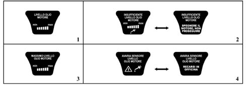
The gradually switching off of the "bars" indicates a decreasing oil level.
If it is not possible to read the engine oil information as a result of the battery voltage being too low, the value displayed previously is suggested.
If the oil level is below the minimum level, the "bars" are all switched off. In this case, the following messages are shown, in order, for 20 secs.:
- "minimum oil level" + empty bars + insufficient oil level symbol in the special warning light area, accompanied by a buzzer (3 secs.)
- "insufficient engine oil level - switch off the engine do not continue" (2 secs.) (2)
If the oil level is above the maximum level, the "bars" will all be lit up and the "maximum oil level" message + bars will be displayed (3).
If there is a break or a short circuit in the detection circuit at the key-on, the "engine oil level sensor failure" message will be displayed for 20 secs (4).
DISPLAY OF VEHICLE PROTECTION SYSTEM INFORMATION [F001-F322-F326]
The information relating to the "VEHICLE PROTECTION SYSTEM" consists of instructions for the driver or fault messages.
Instructions for the driver
The display of instructions for the driver concerning the "Vehicle Protection System" takes place at the end of the key-on cycle and lasts 10 seconds.
The screen consists of the "Vehicle protection system failure" symbol plus the appropriate message. The possible messages are:
- REMOTE CONTROL BATTERY RUN DOWN
- ELECTRONIC KEY BATTERY RUN DOWN
- BREAK IN ATTEMPT
- ELECTRONIC KEY NOT RECOGNIZED
These indications are displayed, if necessary, for 10 seconds after the key-on cycle. There are no connected acoustic warnings and, if the condition persists, they are put forward again at the next key-on (always after the diagnostic cycle).
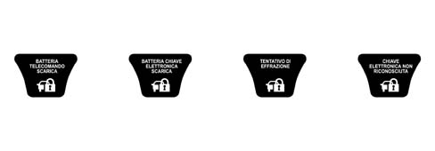
For vehicles with the key-less go system, in order to remind the driver of the automatic activation of the steering lock, the following screen is displayed for 3 seconds after the key-off.
Fault messages
The display of faults involving the "Vehicle Protection System" is managed in the same way as for ordinary faults.
The screen consists of the "Vehicle protection system failure" symbol plus the appropriate message.
The faults displayed at the key-on according to the logic described in the CODE chapter are:
- ALARM FAILURE
- SYSTEM NOT PROGRAMMED
- FAILURE AND SYSTEM NOT PROGRAMMED
- VEHICLE PROTECTION SYSTEM FAILURE
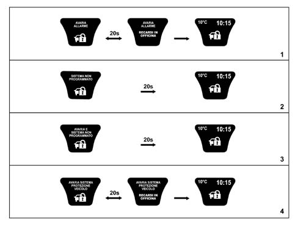
In addition, for vehicles with the key-less go system, in order to warn the driver that the system no longer detects the presence of the CID and therefore if the engine is switched off the vehicle can no longer be started up again, a rolling code lasting 20 seconds is displayed followed by the ideogram illustrated with the message:
- KEY NO LONGER PRESENT IN THE VEHICLE
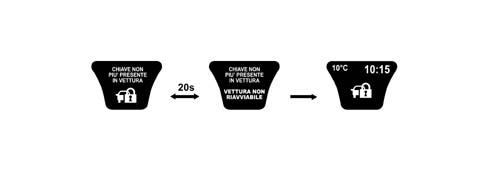
There is also a buzzer as well at the same time as the display of messages for all the faults listed above.
DISPLAY OF ICE DANGER SIGNAL [F192]
In order to warn the driver that there may be ice on the road, if the outside temperature is £ 3°C and the engine speed is above 704 RPM, the temperature reading is displayed (flashing - frequency 1 Hz d.c. 50% ON), plus the "snow symbol" + the message "warning danger of ice" for 10 seconds. There is also a buzzer at the same time as the display of the message.
At the end of the warning cycle:
- the message disappears,
- the temperature reading stops flashing
- the small sized "snow symbol" is shown in the specially dedicated area of the display (as long as the condition T £ 6°C persists) and the screen prior to the event is put forward.
This display only takes one after the outside temperature is recognized to be T £ 3°C and is only repeated if the temperature reaches the value T ³ 6°C and then returns again to T £ 3°C.
The "snow symbol" disappears when T > 6°C.
If the outside temperature at the key-on is T £ 3° C, then the display shows the entire diagnostic cycle at the key-on and later on it initiates the "warning cycle" described above.
During the "DANGER OF ICE" warning cycle the temperature reading does not vary even if the information sent by the climate control unit has changed in the meantime.
If the "warning cycle" is interrupted by a fault message (greater priority), the above fault is not seen through to the end.
DISPLAY OF LIGHT DIMMER ADJUSTMENT FUNCTION [F041]
The brightness of the panel and all the controls that are lit up can be adjusted using the dimmer to the left of the panel in the light panel.
The brightness can never be reduced to zero
The dimming value (0-10) is transmitted by the NQS via the B-CAN to allow the brightness value to be sent to the other Nodes.
If the side lights are deacivated, then the display lighting is 100% and it can be adjusted (dimmed) (high line only).
The failure signal LEDs cannot be adjusted/dimmed
If the brightness is being adjusted, the message "Control brightness adjustment" is shown in the top part of the active matrix display whilst the lower section shows a histogram with "bars" lighting up/going out one at a time.
This screen remains for 5 seconds after the dimmer is adjusted and after this the previous screen is displayed.
During the display of fault information (with the exception of "DANGER OF ICE"), the display lighting cannot be adjusted and the brightness level remains at 100%. The dimmer is activated to adjust the brightness of the Instrument Panel and other components on the vehicle. The "CONTROL BRIGHTNESS ADJUSTMENT" screen, is not, however, shown on the display.
Brightness adjustment table
The relation which governs the connection between the level of brightness and the bars shown on the display is defined in the table below:
Number of bars visible | Brightness in % | Note |
|---|---|---|
1 | 2,5 | minimum brightness > 0 |
2 | 5 | |
3 | 10 | |
4 | 15 | |
5 | 20 | |
6 | 25 | |
7 | 40 | |
8 | 55 | |
9 | 70 | |
10 | 85 | |
11 | 100 | maximum brightness |
Behaviour at the key-on: at the key-on with the +lights on, the graph is always lit up at the adjusted light level.
Behaviour at the key-off: at the key-off the adjustment value set is memorized and used for the next key-on.
Disconnecting the battery or resetting the system does not cause the memory to be lost. When the battery is connected the value set should be the one adjusted prior to the disconnection of the battery.
DISPLAY OF SPEED LIMIT FUNCTION [F141]
It is possible to set a speed limit (between 30 ÷ 250 km/h in steps of 5 km/h) which, if exceeded, activates the following procedure:
- The symbol and "speed limit exceeded" message are displayed and the warning screen is displayed in rolling mode accompanied by a buzzer for 10 seconds. The symbol contains the speed limit set/exceeded.
- When the warning cycle is over the message disappears whilst the symbol remains and only disappears when the speed of the vehicle goes lower than 5 km/h below the speed limit set.
This procedure is carried out once after the speed limit is exceeded and can only be repeated if the speed of the vehicle goes at least 5 km/h below the speed limit set and then goes above the speed limit once again.
The speed limit is set usint the NIT, but the programming, processing and display of the exceeding of this limit takes place in the NQS.
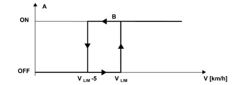
- V - Vehicle speed
- Vlim - Speed limit set by the driver
- A - Signalling of speed limit exceeded
- B - message + symbol + buzzer
- - For example having set a limit of 120 km/h
DISPLAY OF DOORS OPEN FUNCTION [F091]
The DOORS OPEN information is signalled synchronized with the vent, in other words the display is activated immediately as soon as one or more doors is opened and remains open until all the doors of the vehicle are properly shut.
In the case of DOORS OPEN there is a buzzer and the screen (1) appears on the display.
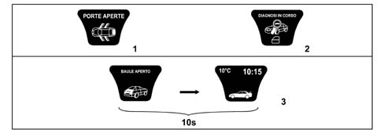
If one or more doors is found to be open during the diagnostic stage at the key-on, the cycle of screens continues as usual, whilst a small "DOORS OPEN" symbol (warning light) is shown on the display without an additional specific message on the state of the doors (2).
At the end of the diagnostic cycle, if the DOORS OPEN state persists, the screen for this case is displayed (2D/3D symbol + "DOORS OPEN" message). If, however, the DOORS OPEN state is verified during the diagnostic cycle and the speed of the vehicle is above 4 km/h, then the "DOORS OPEN" screen is displayed immediately.
In the case of a key-on with the engine not started up, the DOORS OPEN information is not displayed.
If only the boot is open, a specific screen is displayed for 10 seconds after which it is shown in a reduced size in the dedicated warning lights area (3).
DISPLAY OF TYRE PRESSURE FUNCTION [F135]
All displays are accompanied by a buzzer.
System not programmed
If the Tyre Inflation Pressure Control Unit has not been programmed, the following information screen appears. 20 seconds after the "SYSTEM NOT PROGRAMMED" screen has been displayed, the previous screen with the icon symbol is put forward again.
Insufficient pressure
When the Instrument Panel receives the signal from the Tyre Inflation Pressure Control Unit that the pressure in one or more of the tyres is below the recommended value, the following screens are displayed in rolling mode for a total of 20 secs. (1).
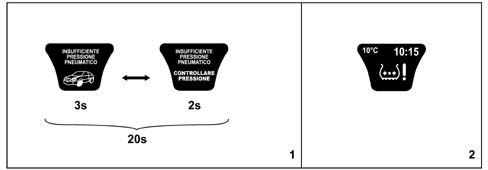
When this cycle is over the following symbol is displayed in the dedicated warning lights area until the correct inflation pressure is restored.
The warning cycle is repeated after 10 minutes (once).
The complete cycle is repeated at the next key-on if the inflation pressure is not correct (2).
System failure
This type of display takes place in the following cases:
- presence of a fault in the control unit circuit and/or wiring;
- no signal received from one or more sensors;
- TPMS control unit faulty;
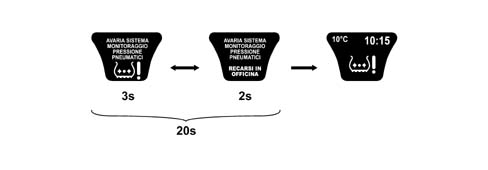
Tyre punctured
When the Instrument Panel receives the signal from the Tyre Inflation Pressure Control Unit that the pressure in one or more of the tyres is below the alarm level, the following screens are displayed in rolling mode for a total of 20 secs.
When this cycle is over the symbol is displayed in the dedicated warning lights area as in the case of insufficient pressure until the fault is corrected.
Following a key-off and then a key-on, if the fault is still present, the instrument panel displays the cycle again indicating the REMAINING RANGE (in km) (1).
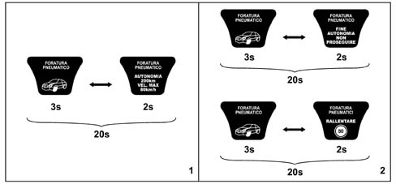
During a "punctured tyre" state, if the speed of the vehicle exceeds 80 km/h, or if more than 200 km is travelled (maximum distance) then one of the following warning cycles is displayed in accordance with the logic for priority 0 faults (2).
DISPLAY OF CLOCK FUNCTION [F162]
The display of the time in hours and minutes is shown in both the panel active matrix and the CONNECT display.
The values are automatically updated by the CONNECT
If there are irregularities as a result of problems with the signal between the CONNECT and the Instrument Panel then dashes (-:-) are shown in place of the time
DISPLAY OF OUTSIDE TEMPERATURE INFORMATION [F192]
The display of the temperature is shown in both the panel active matrix and the CONNECT display.
If there are irregularities as a result of problems with the signal between the CONNECT and the Instrument Panel then dashes (-:-) are shown in place of the temperature expressed in °C or °F
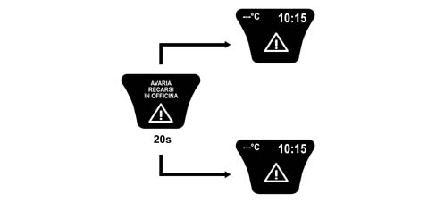
DISPLAY OF AUDIO FUNCTION INFORMATION [F155]
The following information is displayed with the function activated (an operation that can be carried out using the CONNECT and selecting one of the following sources CD/TAPE/RADIO/CD Changer):
- radio station information (RDS mesage is available or frequency of station selected)
- TAPE activated function message (TAPE symbol) with the direction of play, rewinding, fast forward shown.
- CD function activated message (CD symbol) with the name (if available) and/or the number of the CD selected (by CD - Changer) and the track selected.
If the CD function is requested and there is no CD, the message "NO CD" will be shown.
DISPLAY OF NAVIGATOR FUNCTION INFORMATION [F176]
The following items/information are displayed with the function activated depending on the settings made using the CONNECT:
- navigation pictograms
- distance in metres from the next manoeuvre, the possible values are: 2000, 1000, 500, 400, 300, 200, 100, 50, 40, 30, 20, 10 (metres)
- name of the road about to be entered / name of the road being driven along.
Since this information is provided by the CONNECT, if the information about the names of the roads is too long to be displayed on a single line in the display panel, then this information is cut to the last character that can be shown on the active matrix display line.
DISPLAY OF TELEPHONE FUNCTION INFORMATION [F209]
The following items/information are displayed with the function activated depending on the settings made using the CONNECT:
- last number dialled (timed screen)
- last numbers or names dialled (if in the directory, one at a time)
- telephone directory (internal and/or on SIM card, one name at a time)
- telephone number being selected or name (if in the directory)
- telephone number (1) of person being called or name (2) (if in the directory)
- warning of a second incoming call
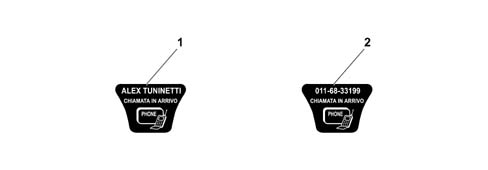
When a call is being sent, the screen with the name of the person being called appears on the display.
This screen is not timed, but remains visible until there is an answer or until the user stops the call using the TELEPHONE OFF function.
The same logic applies in the case of an incoming call: the "INCOMING CALL" screen remains on the display until the call is answered or until the person making the call decides to cut it off.
DISPLAY OF VOICE BOX FUNCTION INFORMATION [F270]
With the function activated (an operation that can be carried out using the CONNECT) it is possible to record messages in the Voice Box with the following screen appearing on the display:
- This screen is not timed, but remains there for the entire period of the recording (maximum time - 3 minutes).
WARNING OF "SMS (SHORT MESSAGE)" BEING RECEIVED [F209]
A symbol + an "Incoming message" message is displayed for 10 secs. than the previous screen is displayed with the addition of the "SMS" symbol in the warning lights dedicated area. The message has to be reade using the CONNECT
DISPLAY OF PLANNED MAINTENANCE FUNCTION INFORMATION [F269]
In order to provide the user with information concerning servicing, the active matrix display in the panel shows a series of messages at each key-on.
The "SERVICE DUE IN" message is followed by the number of "kilometres" or "days" until the vehicle is due for a service.
There are 9 services in the Planned Maintenance Programme as follows:
Service | Time Schedule |
|---|---|
1 | After 20,000 km or one year from purchase |
2 | After 20,000 km or one year from 1st service |
3 | After 20,000 km or one year from 2nd service |
4 | After 20,000 km or one year from 3rd service |
5 | After 20,000 km or one year from 4th service |
6 | After 20,000 km or one year from 5th service |
7 | After 20,000 km or one year from 6th service |
8 | After 20,000 km or one year from 7th service |
9 | After 20,000 km or one year from 8th service |
Service information is supplied in "km" or "days" depending on which is due first (the one excludes the other until the next time).
The starting information for the "mileage" is 20,000 km and is set by the supplier of the instrument panel.
The starting information for the "days" is 365 days (1 year) and is automatically set by the panel when the total mileage reached is 201 km.
The message is displayed directly the first time and only at the key-on when:
- 1 - the mileage until the next service is equal to or less than 2000 km
- 2 - there are 30 or less days until the next service
Later on the message is only displayed once at the key-on when the value is equal to or less than:
- 1800, 1600, 1400, 1200, 1000, 800, 600, 400, 200, 100, 50 km .
- 27, 24, 21, 18, 15, 12, 9, 6, 3 days
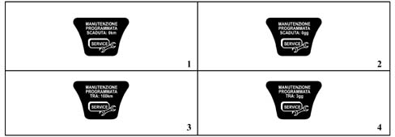
From the moment the value of 0 km / 0 days is reached, the following messages are displayed again at the key-on:
- 3 "PLANNED MAINTENANCE DUE - 0 km"
- 4 "PLANNED MAINTENANCE DUE - 0 days".
At each service interval, the Service personnel should:
- reset the "km" counter and the "days" counter to the starting vlues (20,000 km and 365 days) using the diagnostic equipment.
- memorize that the service has been carried out, giving the date of the service, service no., total mileage.
If the instrument panel is being replaced, the Service personnel should:
- restore the mileage from the milometer of the panel being replaced on the new panel
- read the number of services carried out and enter them into the new panel
- read the mileage/days on the old panel until the next service and enter them into the new panel.
DISPLAY OF NEED TO REFILL WITH FUEL INFORMATION [F002]
If the fuel level is low, in other words in the "reserve" condition, in addition to the warning light in the panel coming on the relevant message and symbol appear in the display accompanied by a buzzer after which the screen prior to the signal is restored.
DISPLAY OF INERTIA SWITCH ON INFORMATION [F005]
If the inertia switch is operated, the panel displays the relevant message (1) and symbol accompanied by a buzzer. There is no second image to produce a rolling logic for the display, likewise there is no timed period of 20 seconds: the image remains on constantly in the display unless the user presses the ESCAPE button.
The summary symbol (2) is only shown after pressing the ESCAPE button.
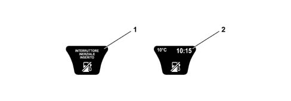
DISPLAY OF CRUISE CONTROL FUNCTION INFORMATION [F025]
When the CC system is activated the display shows the "cruise control on" message and the relevant symbol (1):
This screen remains for 5 secs, after which the screen with the cruise control symbol in the top left corner reappears (2).
This is valid for all screens that allow the display of this symbol, something which, for example, does not take place in the case of faults (3), where the entire display must be available for this information.
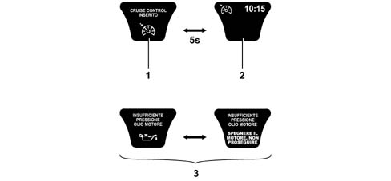
DISPLAY OF ADAPTIVE CRUISE CONTROL FUNCTION INFORMATION [F026]
When the ACC system is activated the display shows the "cruise control on" message and the relevant symbol (1):
This screen remains for 5 secs, after which the screen with the ACC symbol in the top left corner reappears (2).
Whilst the system is operating the following information is displayed:
- Read out (3) of the "speed currently set"
- Read out (4) of the "presence of an obstacle" in the driving path
- Read out (5) of "tracking vehicle in front" and driving style selected (headway)
- Indication (6) of "suggested gear change" (flashing) if there is no automatic or robotized transmission
- Indication (7) of "system failure state" (in the warning light display area)
- indication (8) of the ACC system "not ready" following manoeuvres by the driver that are not compatible with the activation of the system (e.g. reverse gear engaged).
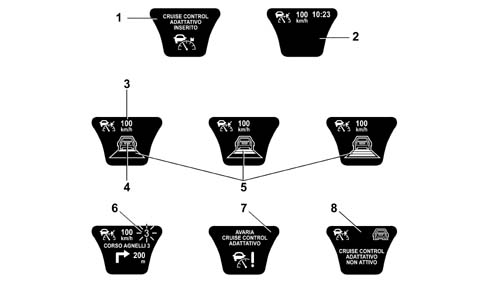
DISPLAY OF FOLLOW ME FUNCTION [F048]
This function is only enabled (with the main beam headlamps off) for a period of 2 minutes after the key-off. During this period of time the side lights and the dipped headlamps can be switched on using the steering column switch unit if the "flasher" position.
Each impulse of the steering column switch unit corresponds to a lighting period of 30 seconds and the maximum number of impulses is 7 (maximum period of 210 seconds).
The following is shown on the display:
- "follow me" function message activated
- the lighting period (in secs) set using the steering column switch unit (number of impulses x 30 seconds)
The FOLLOW ME screen is displayed for 20 seconds.
If the left or right parking lights function is activated, then the FOLLOW ME HOME function has priority.